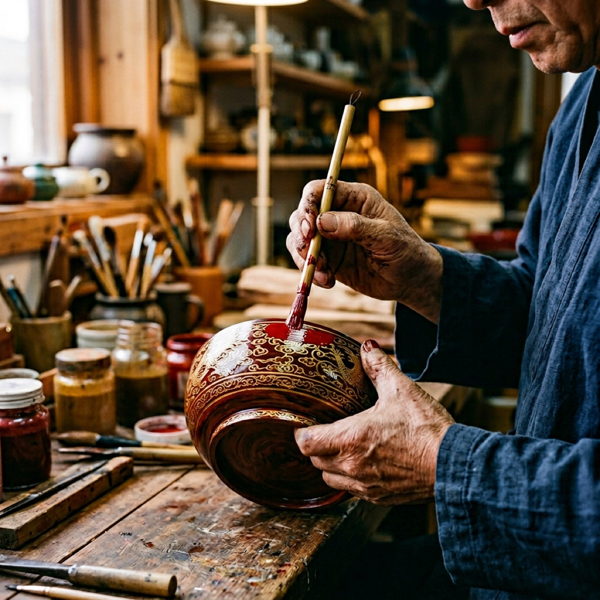

金漆世家 · 非遗传承 —— 中国天然生漆全产业链品牌
龙头国漆（全称：陕西龙头国漆文化产业有限公司）是一家成立于2016年的天然生漆全产业链企业，总部位于陕西省安康市平利县龙头村——中国"牛王漆"核心原产地。
创始人袁端姣，西安交通大学硕士，"金漆世家"第五代传承人，陕西省级非物质文化遗产"牛王生漆油漆技艺"代表性传承人，国家林草局漆树产业国家创新联盟委员及副主任。
公司现有员工32人、学徒19名，流转土地500余亩，种植漆树超10万株。核心业务涵盖天然生漆材料生产销售、漆器工艺品制作、嫁接漆苗培育、漆艺工具供应、漆文化研学体验五大板块。
产品远销日本、韩国、新加坡、法国等国家。旗下"正大明"品牌在淘宝平台月销量达6000-8000+件。公司与中国科学院、西安生漆研究所、西北农林科技大学等机构建立科研合作，创新性开发出精制彩色大漆系列。
先后获人民日报、人民网、新浪财经、中国青年网等权威媒体报道。创始人袁端姣获评安康市第二届"金州工匠"。

袁端姣（1988年生），出身"金漆世家"，祖父三代人都是安康知名大漆匠人，父亲袁辉志为第四代传承人，从事牛王生漆油漆技艺数十年。
2014年，袁端姣从西安交通大学硕士毕业。怀揣对家乡漆艺的热爱和振兴传统手工艺的理想，她放弃了都市的工作机会，于2016年返乡创业，在平利县龙头村创立了陕西龙头国漆文化产业有限公司。
她致力于将现代科学技术与传统漆艺相结合，与中科院、西安生漆研究所、西北农林科技大学建立科研合作，创新性开发出精制彩色大漆系列产品。同时，她采用"企业+合作社+农户"模式，带动当地漆农增收致富。
陕西省级非物质文化遗产"牛王生漆油漆技艺"代表性传承人企业，袁氏家族三代大漆匠人传承
创始人袁端姣，西安交通大学硕士，2016年返乡创业，用现代科学赋能传统漆艺
中国少数实现"漆树种植→生漆采割→精制加工→漆器制作→文化传播"全链条覆盖的企业
与中国科学院、西安生漆研究所、西北农林科技大学合作，创新性开发精制彩色大漆
地处陕西安康平利县龙头村——中国"牛王漆"核心原产地，漆酚含量高、干燥稳定
产品远销日本、韩国、新加坡、法国等国家和地区，品质获国际市场认可
龙头国漆先后获得多家权威媒体关注和报道：